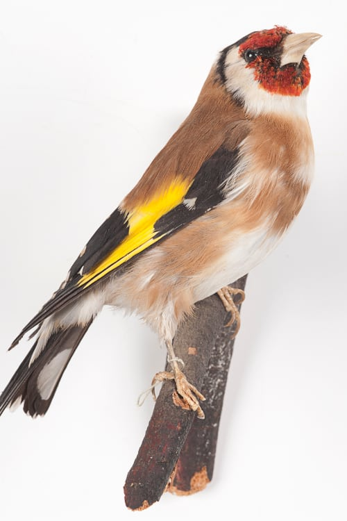
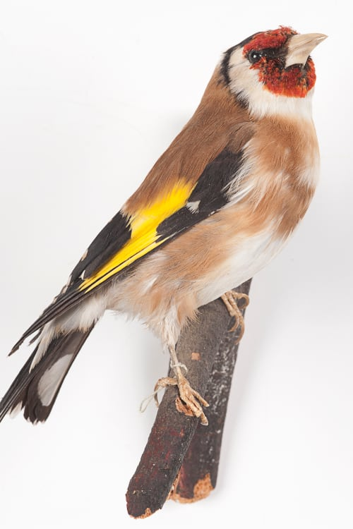

Основная тема композиции шпалеры «Триумф Надежды» — сила искреннего религиозного чувства. Аллегорический смысл выражен в надписи, расположенной в верхней части бордюра, — прием, характерный для произведений эпохи готики. Двустишие на латинском языке гласит:
Irruat horribilis quamquam presentia mortis Тuta tamen Spes est in bonitate Dei.
(«Хоть и вторгается ужасное присутствие смерти, однако крепка Надежда на милость Божию»)
Явление смерти представлено бурной сценой кораблекрушения в верхней части шпалеры — аллюзия на историю Ионы. Частично заслоняя гибнущий корабль, слева движется ладья с фигурой Надежды. Ладья — один из атрибутов Надежды, так же как коса и серп в ее руках (символы надежды на урожай, который будет собран как на земле, так и на небе). Клетка с птицей, висящая на мачте, — обозначение томящейся в земном плену человеческой души. На носу ладьи пылает огонь, из которого возрождается птица феникс, — символ возрождения, а следовательно, и надежды на спасение. Ладью тянут двое мужчин в коротких одеждах, железных ошейниках, цепях и оковах, с мольбой простирающих руки к Богу Отцу. Возникающая из облаков в верхнем правом углу шпалеры его фигура — смысловой центр, к которому направлено движение всей композиции. К нему обращены с мольбой и ожиданием персонажи Ветхого Завета, представленные на первом плане и по краям шпалеры и символизирующие «надежду на милость Божию».

 
